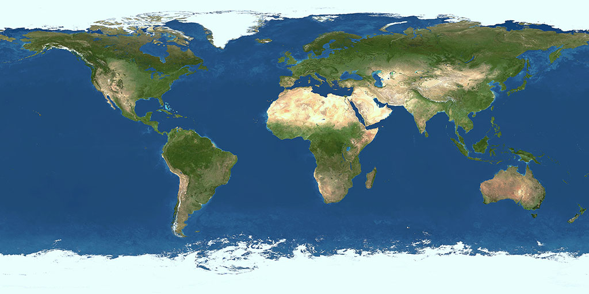
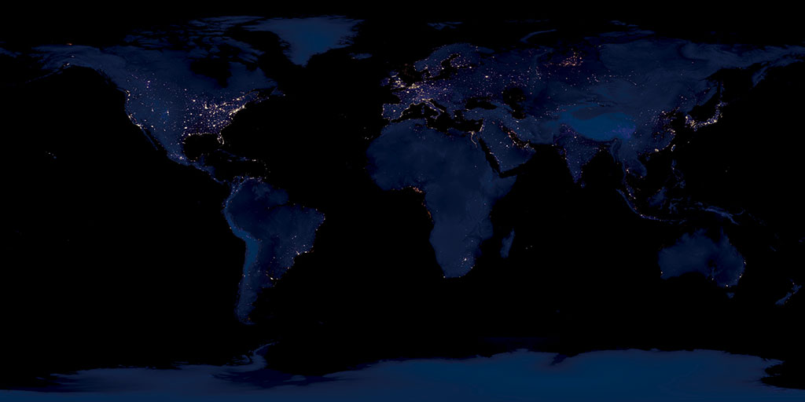
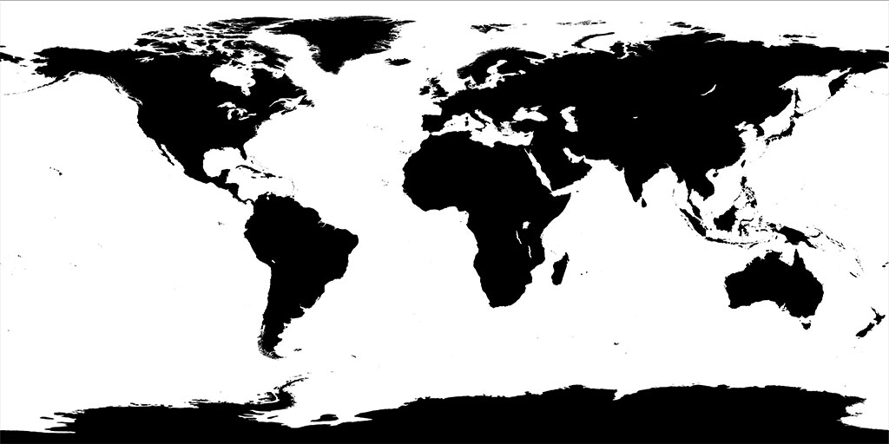
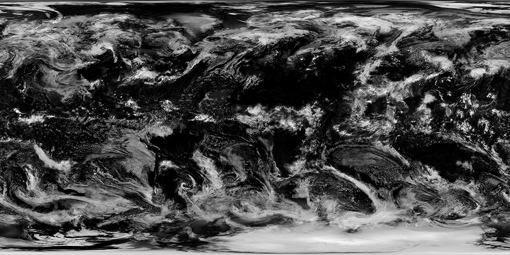
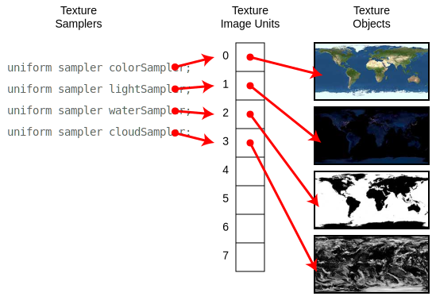

The basic approach to texture mapping, documented thus far, hides a bit of detail. The default state of the GL straightforwardly supports the use of a single texture, but often a shader will make use of multiple texture images. To do so, it will have multiple sampler uniforms.
Consider this rendering of the Earth.
It has a daylight color of green and blue, plus a night time color of city lights in darkness. The oceans show the specular reflection of the sun, but the land does not. Clouds occlude the surface in both day and night. There are four images at work here: daylight color, night time color, water coverage, and cloud coverage.
|  |  |
|  |  |
The fragment shader, therefore, has four texture samplers.
uniform sampler2D colorSampleruniform sampler2D lightSampleruniform sampler2D waterSampleruniform sampler2D cloudSampler
And the application code has four texture objects.
gl.createTexture()gl.createTexture()gl.createTexture()gl.createTexture()
A connection from each sampler to its associated texture object must be made. These connections are indirect. Each is made by way of a texture image unit, or TIU.
A TIU can be viewed as a piece of GPU hardware that performs image sampling. As such, there is a finite number of them, usually between 8 and 64, depending on the capability of the hardware. They are numbered starting with 0.
To form a connection between a texture object and a sampler, two associations are needed: bind a texture object to a TIU, and configure a sampler to use that TIU. These may be done in either order.
At any given moment, exactly one TIU is the active one, and only the active TIU can have its texture binding modified. So, to bind all four of the Earth textures to different TIUs, as shown above, we activate each TIU prior to binding:
gl.activeTexture(gl.TEXTURE0)gl.bindTexture(gl.TEXTURE_2D, colorTexture)gl.activeTexture(gl.TEXTURE1)gl.bindTexture(gl.TEXTURE_2D, lightTexture)gl.activeTexture(gl.TEXTURE2)gl.bindTexture(gl.TEXTURE_2D, waterTexture)gl.activeTexture(gl.TEXTURE3)gl.bindTexture(gl.TEXTURE_2D, cloudTexture)
A sampler uniform, then, is configured with the number of the TIU that is bound to the desired texture. This configuration consists of a single integer, so uniform1i is used.
gl.uniform1i(colorSamplerLocation, 0)gl.uniform1i(lightSamplerLocation, 1)gl.uniform1i(waterSamplerLocation, 2)gl.uniform1i(cloudSamplerLocation, 3)
Note a potential point of confusion here: activeTexture refers to a TIU using a symbol, e.g. TEXTURE0, while uniform1i refers to a TIU using a number, e.g. 0.
To be clear, the texture image and the texture parameters are attributes of a texture object, not a texture image unit.
Specifically, when an application calls texImage2D to set the image, or calls texParameter to set a filtering or wrapping mode, it is modifying an attribute of the texture object currently bound to the currently active texture image unit. (Got that?)
So, to configure a texture object, it must be bound to a TIU and that TIU must be the active one.
Until now, we've been relying upon the fact that the default active TIU is TEXTURE0, and the default value of a sampler uniform is also 0. These defaults work correctly for a single texture only.